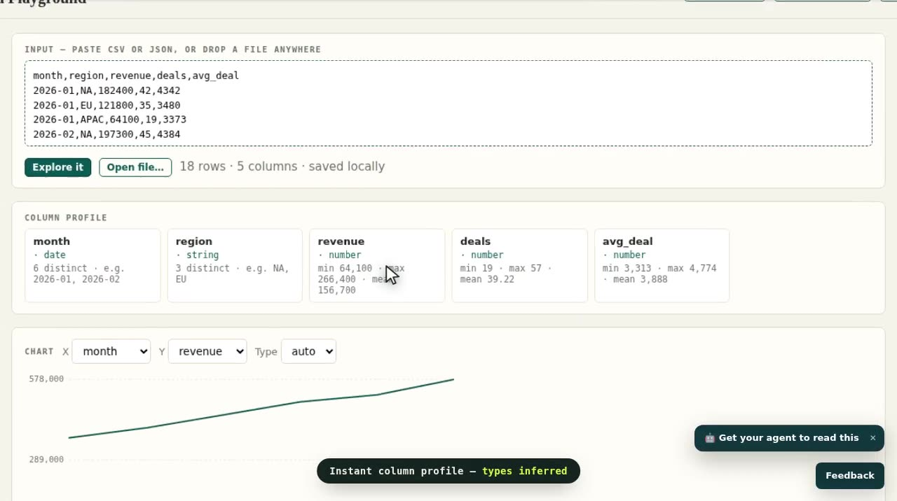
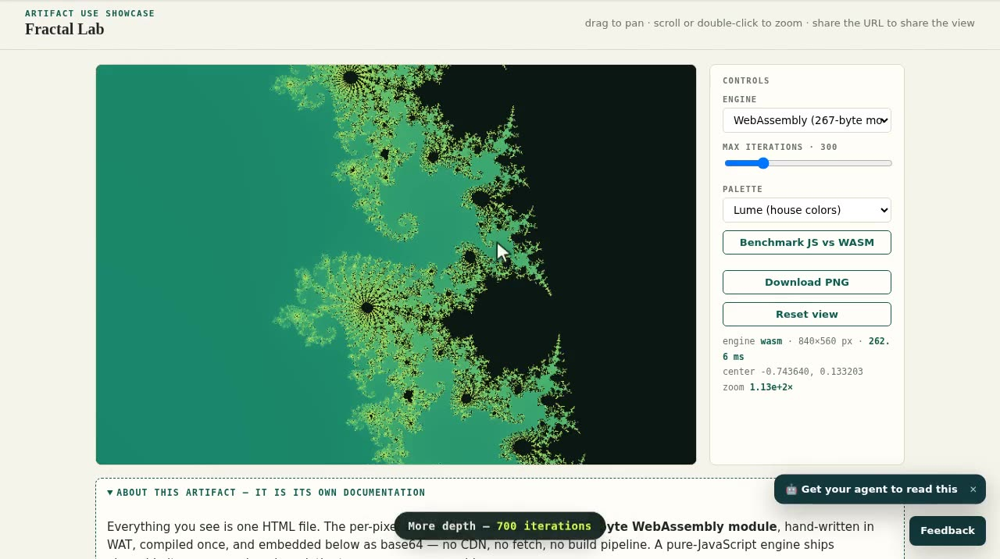
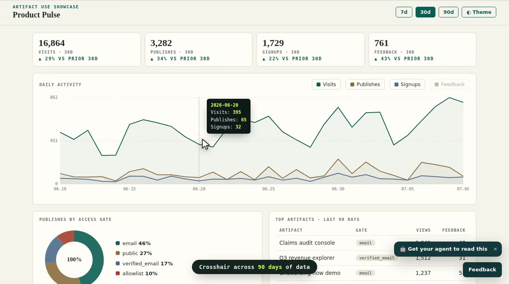

Production spec · for review
Showcase Reel — Storyboard
Three ~20s muted demo reels for the artifacts.iofold.com landing page, recorded with the Xvfb capture rig (30fps raw, animated cursor, caption chips, camera zooms). This document is the shooting plan — leave feedback on anything: pacing, captions, zoom choices, scene order.
Reel 1 · Data Playground

"Paste → explore → share"
The local-first story: data never leaves the tab, everything is instant, and the share link carries the dataset itself.
| # | t | Action | Camera |
|---|---|---|---|
| 1 | 0–4s | Load sample CSV"Paste any CSV or JSON — it never leaves your tab" | wide |
| 2 | 4–8s | Column profile appears"Instant column profile — types inferred" | zoom 1.32× on stats |
| 3 | 8–13s | Hover chart tooltips, switch to bars by region"Dependency-free SVG charts — hover for values" | wide |
| 4 | 13–18s | Sort by revenue, type "NA" in filter"Sort and filter — live" | zoom 1.35× on filter |
| 5 | 18–22s | Copy share link"Share it — the data travels in the URL" | wide, settle |
Reel 2 · Fractal Lab

"A 267-byte WASM kernel, honestly benchmarked"
The technical flex with an honest punchline — the benchmark verdict is the money shot.
| # | t | Action | Camera |
|---|---|---|---|
| 1 | 0–5s | Open on full set"Every pixel computed by a 267-byte WASM kernel" | wide |
| 2 | 5–12s | Six double-click dives into seahorse valley"Double-click to dive — ~110× zoom" | wide (canvas zooms itself) |
| 3 | 12–16s | Iterations → 700, palette → Ember | wide |
| 4 | 16–21s | Run benchmark, read verdict"JS vs WASM — benchmark it on your machine" | zoom 1.5× on bars · hold 1.4s |
Reel 3 · Product Pulse

"A folder that documents itself"
Multi-file artifacts: modules, data, dark mode — closing on the live self-manifest.
| # | t | Action | Camera |
|---|---|---|---|
| 1 | 0–4s | KPI row with deltas"A multi-file artifact — modules, data files, styles" | zoom 1.28× on KPIs |
| 2 | 4–9s | Crosshair sweep across 90 days | wide |
| 3 | 9–13s | 90d range + Feedback series toggle | wide |
| 4 | 13–16s | Dark mode flip | wide |
| 5 | 16–21s | Scroll to the live file manifest"It even lists its own file manifest" | zoom 1.35× on manifest · end here |
Production notes
-
Rig: headed Chrome on Xvfb
:99, ffmpeg x11grab @30fps, magenta-calibrated crop1280×716. No screencast, no frame interpolation. - Overlay: director.js — eased cursor, click ripples, caption chips, CSS camera. Scrollbars suppressed.
- Encode: x264 CRF 20 → faststart MP4, ~1 MB per reel. Posters at the key frame.
-
Delivery: hover-to-play cards on the landing
showcase;
preload="none"; reduced-motion keeps posters.
Open questions
- Is the stats zoom in Reel 1 too subtle at 1.32×?
- Reel 2: is 1.4s enough hold on the benchmark verdict to read both bars?
- Do the reels need an end card (logo + URL), or is the caption chip enough?
- Scene order in Reel 1 — is the share-link moment buried at the end?